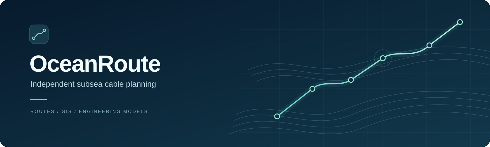
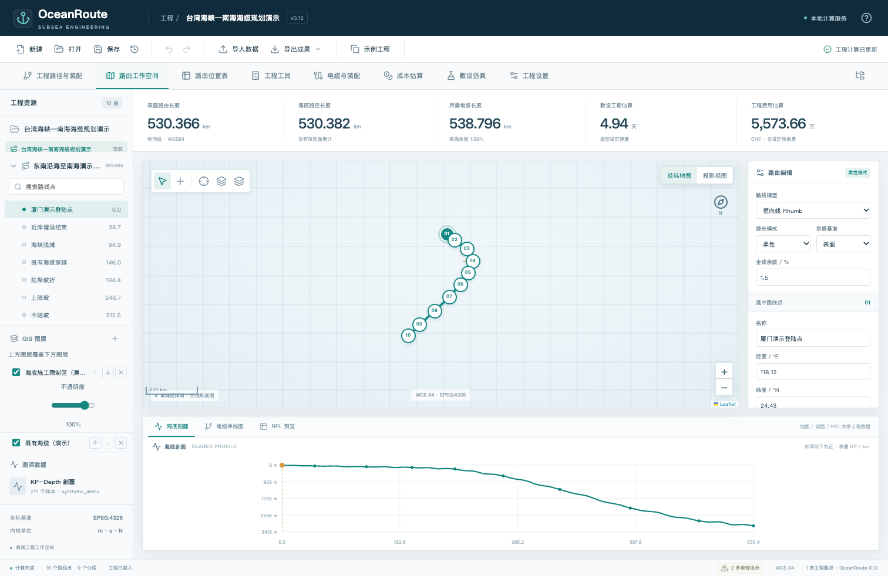
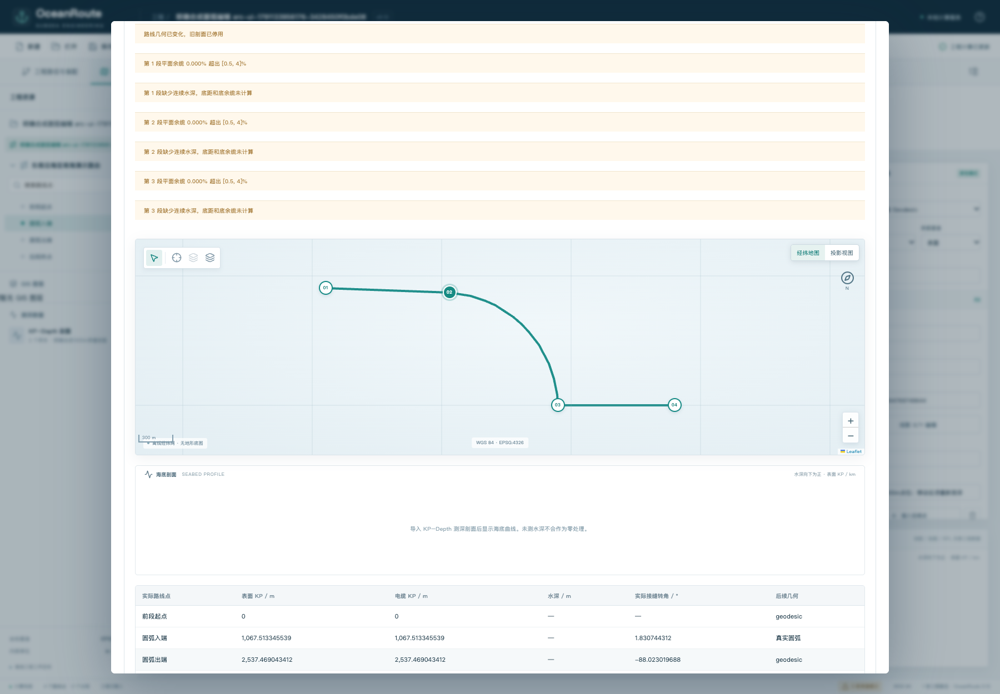
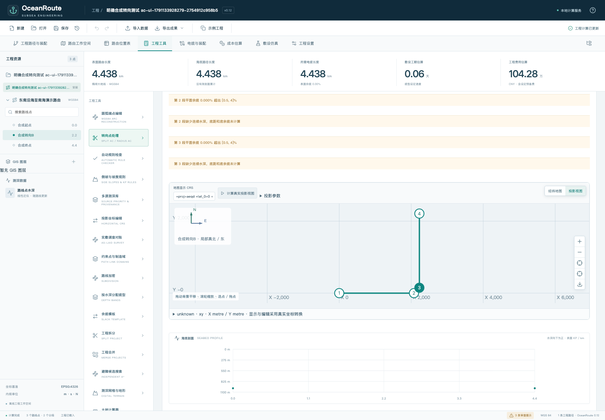
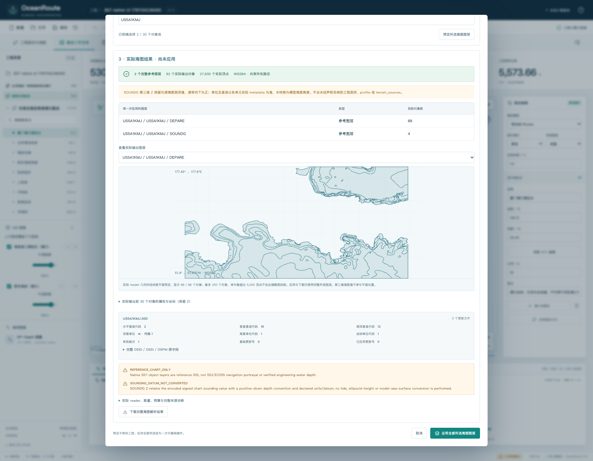
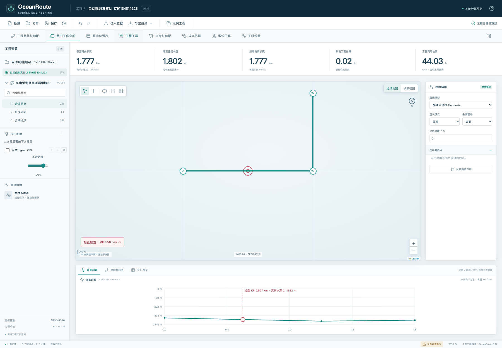
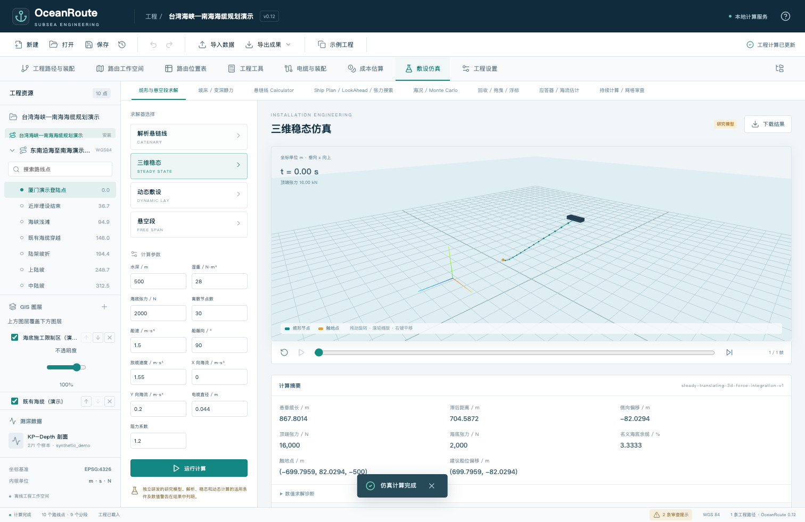

路线与 KP 分析
WGS84 测地线、恒向线、路线点、方位与转角；分开展示表面路线、海床路线和电缆长度。
MIT 开源项目 · 0.12.1 稳定交付
从 WGS84 路线、真实圆弧和工程位置表，到 GIS 参考图层、规则检查与力学研究模型。openOceanRoute 提供可阅读的实现、可运行的示例，以及明确记录的验证范围。
面向 Windows 10 / 11 x64 · 内置 Python 与生产依赖 · 安装器未签名 · Windows 原生实机尚未验收

当前版本可以做什么
下列功能均指 OceanRoute 0.12.1 的独立实现范围；原厂兼容、设备控制和完整施工能力另有未完成部分。
WGS84 测地线、恒向线、路线点、方位与转角；分开展示表面路线、海床路线和电缆长度。
Split AC 分段整形，Radius AC 生成真实圆弧；端点编辑从地图、RPL 或坐标输入形成完整候选，再显式应用与撤销。
真实 CRS 转换、原生坐标单位和投影地图；支持坐标预览与编辑，转换失败时明确报告。
工程位置表、模板导入导出、多路径与共享装配；保留固定／柔性缆长和 Path Link 制造关系。
参考图层、叠放和不透明度控制；读取 NOAA S-57 对象、属性与实际几何。海图参考数据不自动成为工程水深。
KP–Depth 剖面、多源地形与来源信息、侧向剖面。缺测和 NoData 保留，不用零深度掩盖未知数据。
交叉、邻近与坡度三类规则，显式比较条件与 AND／OR 组合；错误可按路径、类型、KP 排序并只读定位。
解析悬链线、静力与三维稳态／动态算例，以及海况、海流与维修研究流程。模型有边界，尚需现场对照。
实际界面
以下为未裁剪、未改写的原截图副本。除公开 NOAA 海图参考数据外，展示的是合成示例与测试用例；点击图片可查看原尺寸。

合成路线与 KP–Depth 数据共用工作区。工期和费用是模型估算，不是现场报价。

端点移动后先审查候选。截图尚未应用；旧剖面停用，未测水深没有补零。

合成转向用例的真实半径圆弧候选。连续水深缺测提示保留，预览不代替工程校核。

NOAA 交换集的深度区与测深点。不是 S52／ECDIS 航海呈现，也未转换为工程水深。

同一错误位置在地图和剖面中标记。有限检查和采样不能证明连续海底安全。

合成海缆的空间形态与计算摘要。属于独立研究实现，尚无原厂黄金输出或海试精度认证。
实际执行记录
这些数字来自冻结版 0.12.1 的完整执行记录，不累计专项重跑，也不把兼容层测试写成 Windows 实机验收。
2,232
正式完整后端运行；源码首装另有独立执行记录。
116
单 worker、零重试，各场景一次执行；冻结输入前后核对。
2,231 + 1 skip
Windows 二进制完整测试；1 项 POSIX 专属测试自然跳过。
安装器尚未签名；Windows 10 / 11 x64 是目标平台，原生 Windows 实机验收尚未进行。研究模型、有限采样和测试通过不构成海上工程安全认证，也不证明与 Makai 原厂算法或现场精度等效。
阅读稳定交付与实际验证记录 →开始使用
Windows 离线安装包内置运行时与生产依赖。便携源码 ZIP 含预编译界面，启动器需要 Python 3.10+ 和首次联网；从 Git 克隆源码还需用 Node.js / npm 编译界面。
常见问题
openOceanRoute 是公开项目与仓库名称；当前软件界面与发行文件使用 OceanRoute，稳定交付版本为 0.12.1。部分界面标签简写为 0.12。
没有。MakaiPlan / MakaiPlan Pro 是 Makai 的商业软件；本项目依据公开资料独立开发，不含原厂程序、授权或付费资源，不是其官方产品或获授权的兼容替代品。
不是。当前功能由明确的几何、工程规则与数值研究模型实现。网页提供可检索的项目说明，不表示产品具有 AI 路线规划功能。
不需要。Windows x64 离线安装包内置 Python 与生产依赖，通过系统默认浏览器打开本地工作区。便携源码 ZIP 含预编译界面，启动器需要 Python 3.10+ 和首次联网；从 Git 克隆源码还需用 Node.js / npm 编译界面。
均未完成。现有 Windows 二进制与安装流程在 Wine / Rosetta 兼容层中测试，不能代替原生 Windows 实机验收。请从项目 Releases 下载，并依据发行记录核对 SHA256；不要把关闭安全软件作为安装步骤。
不能。S-57 是参考 GIS 图层，不是官方航海呈现或已转换工程水深；有限规则检查、地形采样与研究计算不构成连续海底安全、原厂等效或现场工程认证。
圆弧端点编辑先产生完整工程候选，用户显式应用后更新工作区；保存由用户另行执行。工作区支持整体撤销，过期输入或文档的候选不能继续应用。